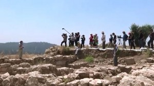
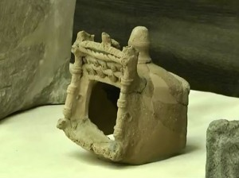

СЛЕДЫ ЦАРЯ ДАВИДА в долине Аэла
На пресс конференции в Еврейском университете в Иерусалиме были представлены новые археологические находки. Они проливают свет на исторический план библейского повествования. Находки представили профессор Йоси Гарфинкель из института археологии в Еврейском университете и его коллега Сар Ганор из Отдела Древностей. Среди находок – миниатюрные модели храма, напоминающие описание храма Шломо из книги царей в ТАНАХе.
По окончании пресс конференции состоялась экскурсия на территории раскопок в поселении Хербет-Каяфа долины Аяла. В результате раскопок обнаружена большая часть города-крепости, его стена, построенная из огромных камней и двое городских ворот.

Проф. Йоси Гарфинкель: «Самое главное здесь – это время постройки. Мы послали десять обнаруженных на месте масличных косточек в Оксфорд. Ответ, полученный нами: их возраст – между 1020-980г. до н.э.».Тот факт, что до сих пор не были найдены археологические свидетельства существования иудейских поселений 10в. до н.э., лежал в основании минималистской теории. Минималисты предполагали, что царство Давида не было региональной державой, но маленькой деревней в районе Иерусалима.
видео на иврите
Проф. Йоси Гарфинкель: «Эти находки очень важны, т.к. впервые в археологии Израиля найден укрепленный город Иудее периода царя Давида!»

В соответствии с Писанием, религиозный обряд народа Израиля отличался от религиозного поклонения других народов древнего Востока по двум аспектам: 1. Вера в ЕДИНОГО Бога. 2. Обряд, запрещающий скульптуру или другое изображение. В городе обнаружено три помещения, где отправлялся религиозный культ, подтверждающий описание ТАНАХа.Профессор Йоси Гарфинкель: «Это было большая неожиданность – три помещения для поклонения. Не одно, не два, а три. Понимаете? Т.е., можно говорить не о частном случае, а типичном поведении, повторяющемся вновь и вновь. В этих помещениях нашли очень интересные ритуальные предметы. И ни в одном из этих помещений мы не обнаружили кумиры человека или животного. Т.е., это ритуал не допускающий изображений. Это просто потрясающе!»
Хребет-Каяфа – это укрепленная крепость с колоссальными стенами, со значительными запасами оружия. И разрушена она была вдруг. И все это именно в период царствования Давида, и именно в долине Аяла. И также «совершенно случайно» ТАНАХ описывает в это самое время битвы и войны в Иудее. И вдруг всё становится на свои места. Мы наполнили жизнью исторический период, о котором было ничего не известно. И теперь мы знаем о нем очень много! В сущности, мы заполняем недостающую информацию из 10в. до н.э. Таким образом нам надлежит двигаться в сторону 9, 8, 7вв. до н.э. Постепенно мы восстановим свидетельства непрерывности существования иудейского царства.
перевод с иврита: Эфраим Калиш /TORAART/
Смотрите также эту захватывающую лекцию, проведенную в экспозиции Музея Израиля